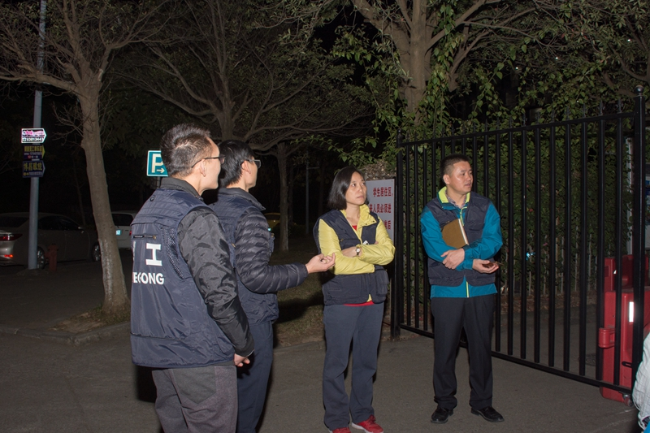

作者：TomLao
发布时间：2017-12-14
为创建优良学风，促进学生的健康成长，我校开展学风建设综合行动。活动分两个阶段进行，12月11日-15日
为初步推进阶段，主要以查上课时间滞留宿舍和查晚归为主，以抽查夜不归宿为辅。
12月17日-明年1月12日为全面铺开阶段，届时将同步开展查上课时间滞留宿舍、查晚归与抽查夜不归宿。12月
11日为学风建设综合行动开展首日，学生处副处长张敏以及莞雅社区宿舍管理人员召开学生工作负责人及宿舍管理
负责人会议，组建工作组和小组，确定轮值表。每个社区设一个工作组，组长由社区分院院长担任，副组长由副院
长担任。
会上还确定了巡查小组，巡查小组分A、B两组，分别于每天上下午教学时间和晚上开展工作，组长宿舍管理员
和辅导员担任。综合行动还建立了信息通报和工作交流微信平台，用于及时通报当天信息和发现的问题。对于有旷
课、晚归和夜不归宿行为的学生，将及时通报所在学院，由该学院跟进处理。大家对对试点工作阶段出现的问题进
行了深入探讨，张敏表示，试点工作要争取在不打扰学生休息的情况下进行。她表示，学风建设工作主要是为了让
同学们养成良好的生活学习习惯。（宫新宇/文 戈亚琦、梁家杰/摄）
